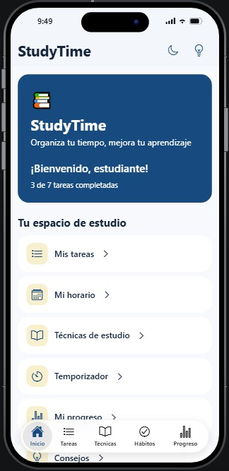

Solución Tecnológica
Study Time
Study Time es una aplicación interactiva diseñada para empoderar a los
estudiantes en la gestión de su tiempo, el fortalecimiento de sus hábitos académicos y
la optimización de su rendimiento escolar[cite: 32]. Ante las dificultades de organización y concentración,
esta herramienta ofrece un espacio centralizado y digital para planificar el aprendizaje de forma autónoma.
La interfaz de la aplicación está estructurada para brindar un acceso rápido y cómodo a
diferentes opciones y herramientas clave que facilitan el día a día escolar:
- Mis tareas: Permite registrar pendientes, llevar el conteo de actividades completadas y priorizar los deberes escolares[cite: 32].
- Mi horario: Una sección dedicada a estructurar las jornadas de clase y estudio para evitar contratiempos[cite: 32].
- Técnicas de estudio: Proporciona guías y métodos efectivos (como resúmenes y mapas conceptuales) para comprender mejor la información.
- Temporizador: Una herramienta ideal para aplicar técnicas de concentración y control de tiempos de estudio por bloques.
- Mi progreso: Permite visualizar el avance y el cumplimiento de las metas propuestas por el estudiante[cite: 32].
- Consejos: Espacio con recomendaciones prácticas orientadas a mantener una buena salud mental y hábitos positivos.
Vista previa y Descarga de la Aplicación
A continuación puedes observar el código QR de acceso y la interfaz principal de la aplicación:

Escanea para Probarla

Interfaz de la App